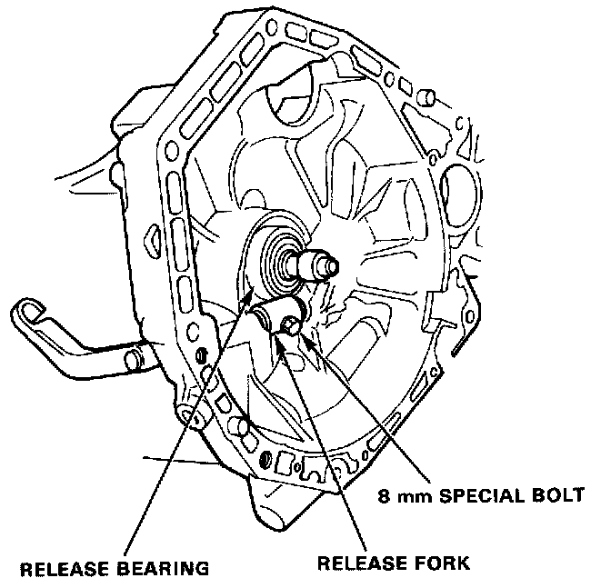
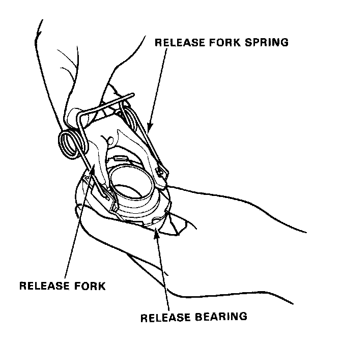
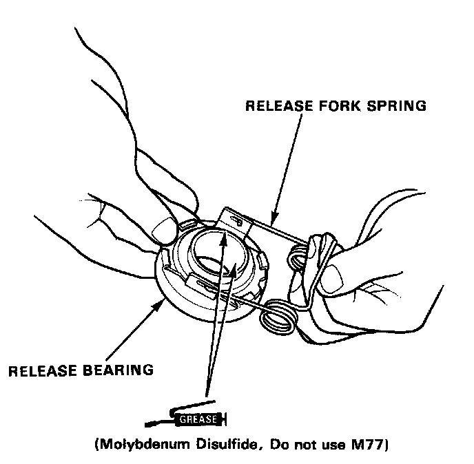
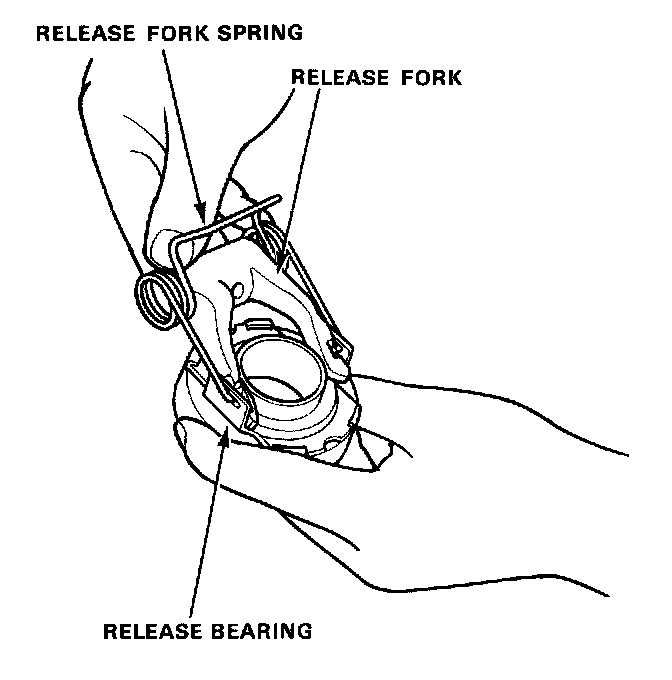
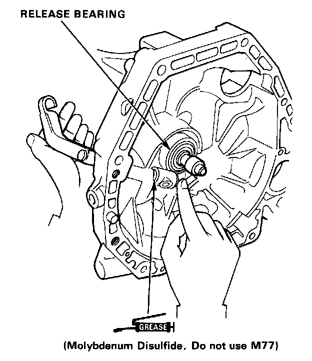
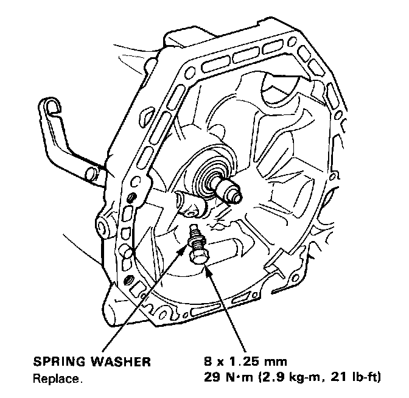

Clutch Release Bearing: Service and Repair
Removal1. Remove the transmission as described under "Transmission Removal."
2. Remove the 8 mm special bolt.

3. Remove the release shaft and release bearing assembly.

4. Separate the release fork from the bearing by removing the release fork spring from the holes in the release bearing.
Installation
1. Apply grease to the grooves inside the bearing and to the bearing / release fork contact surface.

2. Install the release fork spring in the locating holes as shown.

3. Align the release fork with the locating holes of the release bearing.

4. Install the release shaft and the release bearing.

5. Align the release shaft and release fork, then install a new spring washer and bolt.
6. Move the release fork up and down to make sure the fork fits properly against the bearing, and that the bearing slides freely.